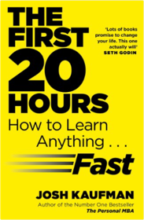

The One Minute Manager
Blanchard, Ken, Johnson, Spencer0007107927Screw It, Let's Do It: Lessons in Life
Branson, Sir Richard0753510995Global entrepreneur Sir Richard Branson has built a business empire and made billions, yet is renowned for his approachability, ability to challenge and succeed against the odds. Screw It, Lets Do It reveals the lessons from life that have helped him through his business and personal life such as, believe it can be done and that, if others disagree with you, try and try again until you achieve your goal; or that you must love what you do. These and other lessons, with examples of how he learned them and how hes used them, are included in this stirring and candid look at his lessons from an exceptional life, which will inspire you to make a difference in your own life.The Power
Byrne, Rhonda0857201700The Secret
Byrne, Rhonda1847370292Fragments of a Great Secret have been found in the oral traditions, in literature, in religions and philosophies throughout the centuries. In this book, readers will learn how to use The Secret in every aspect of life - money, health, relationships, happiness, and in every interaction they have in the world.
1001 Inventions That Changed the World
Jack Challoner9350096854
How World Works EXPORT
Noam Chomsky0241145392
Perfect Digestion: The Key to Balanced Living
Chopra M.D., Deepak0517799758Synchrodestiny : Harnessing the Infinite Power of Coincidence to Create Miracles
Chopra, Deepak1844132196
The Richest Man In Babylon
GEORGE S. CLASON, GEORGE S. CLASON, GEORGE S. CLASON9388144317
Range: Why Generalists Triumph in a Specialized World
Epstein, David0735214506Plenty of experts argue that anyone who wants to develop a skill, play an instrument, or lead their field should start early, focus intensely, and rack up as many hours of deliberate practice as possible. If you dabble or delay, you’ll never catch up to the people who got a head start. But a closer look at research on the world’s top performers, from professional athletes to Nobel laureates, shows that early specialization is the exception, not the rule. David Epstein examined the world’s most successful athletes, artists, musicians, inventors, forecasters and scientists. He discovered that in most fields—especially those that are complex and unpredictable—generalists, not specialists, are primed to excel. Generalists often find their path late, and they juggle many interests rather than focusing on one. They’re also more creative, more agile, and able to make connections their more specialized peers can’t see.
Provocative, rigorous, and engrossing, Range makes a compelling case for actively cultivating inefficiency. Failing a test is the best way to learn. Frequent quitters end up with the most fulfilling careers. The most impactful inventors cross domains rather than deepening their knowledge in a single area. As experts silo themselves further while computers master more of the skills once reserved for highly focused humans, people who think broadly and embrace diverse experiences and perspectives will increasingly thrive.
Double Double
Hunter, Douglas1443406740
First 20 Hours
Kaufman, J.0670921920
The Art of People
Kerpen, Dave0241250781
The Science Of Likability
King, Patrick9388247175Laughable Loves
Kundera, Milan0571206921
Everything Is F*Cked: A Book About Hope
Mark Manson0062955950Starting and Running a Sandwich-Coffee Bar
Stephen Miller1857038053The Power of Your Subconscious Mind
Joseph Murphy8172345666
Forty Rules Of Love
Shafak, Elif (turkey)0241972930Can a Guy Get Pregnant?: Scientific Answers to Everyday
Sones, Bill, Sones, Rich0132206951Can a Guy Get Pregnant? is a very serious collection of off-beat questions and answers that prove truth is indeed stranger–and funnier–than fiction.Bill and Rich Sones are coauthors of the widely-distributed newspaper column “Strange But True.” Over the past eight years, they’ve gathered together thousands of questions and have diligently tracked down the scientific research that answers them.
Here, with dry wit and rock-solid information, the Sones brothers answer everyday and not-so-everyday questions about the body, love, death, and animals, including:
If you’re starving, can you eat your clothes?
(If you’re wearing the right kind, yes.)
Does a “dog year” really equal seven human years?
(Nope. But there is a better way to estimate.)
What would it be like to die in outer space?
(Hint: It’s bad.)
Do opposites attract?
(Not unless money is involved.)
Will chimps watch X-rated movies?
(Maybe it’s better not to ask…)
Accompanied by illustrations that capture the authors’ unconventional sense of humor, Can a Guy Get Pregnant? will astound and delight both those with a penchant for the bizarre and those who insist on the authority of science.
Words of Wisdom
Gareth Southwell0857382314Travel Activity Pad
Simon Tudhope1409561917No Full Stops in India
Mark Tully, Tully, Mark0140104801